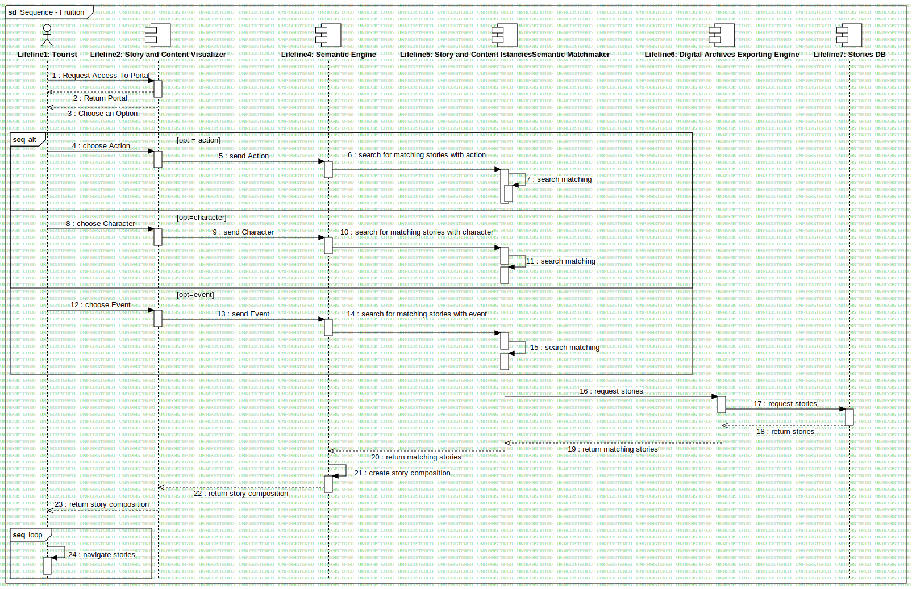

Sequence - Fruition
UMLInteraction
RASTA
::
Requirement Analysis
::
OR3 - Caserta, San Leucio verso Carditello
::
Sequence - Fruition
::
Sequence - Fruition
Description
none
Diagrams

Sequence - Fruition
Fragments
alt
alt
alt
loop
Participants
Lifeline1: Tourist
Lifeline2: Story and Content Visualizer
Lifeline3: Story Composer
Lifeline4: Semantic Engine
Lifeline5: Story and Content IstanciesSemantic Matchmaker
Lifeline6: Digital Archives Exporting Engine
Lifeline7: Stories DB
Messages
Request Access To Portal (Lifeline1→Lifeline2)
Return Portal (Lifeline2→Lifeline1)
Choose an Option (Lifeline2→Lifeline1)
choose Action (Lifeline1→Lifeline2)
send Action (Lifeline2→Lifeline4)
search for matching stories with action (Lifeline4→Lifeline5)
search matching (Lifeline5→Lifeline5)
choose Character (Lifeline1→Lifeline2)
send Character (Lifeline2→Lifeline4)
search for matching stories with character (Lifeline4→Lifeline5)
search matching (Lifeline5→Lifeline5)
choose Event (Lifeline1→Lifeline2)
send Event (Lifeline2→Lifeline4)
search for matching stories with event (Lifeline4→Lifeline5)
search matching (Lifeline5→Lifeline5)
request stories (Lifeline5→Lifeline6)
request stories (Lifeline6→Lifeline7)
return stories (Lifeline7→Lifeline6)
return matching stories (Lifeline6→Lifeline5)
return matching stories (Lifeline5→Lifeline4)
create story composition (Lifeline4→Lifeline4)
return story composition (Lifeline4→Lifeline2)
return story composition (Lifeline2→Lifeline1)
navigate stories (Lifeline1→Lifeline1)
Message1 (Lifeline4→Lifeline2)
request story composition (Lifeline4→Lifeline3)
return story representation (Lifeline3→Lifeline2)
create story composition (Lifeline3→Lifeline3)
Properties
Name
Value
name
Sequence - Fruition
stereotype
null
visibility
public
isReentrant
true
Owned Elements
Sequence - Fruition